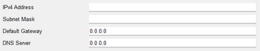
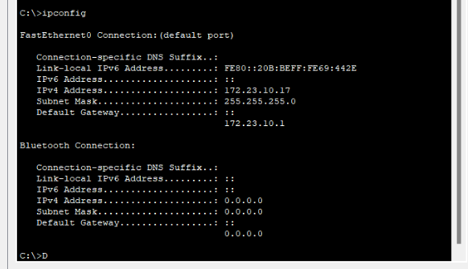

Descripción
En esta práctica de laboratorio se pondrán a prueba ciertos conceptos de las capas de redes para la comunicación de datos más que todo en el aspecto del cableado estructurado de una topología de red y sus dispositivos para el correcto funcionamiento dependiendo del entorno de trabajo de red, a parte la diferencia respecto al anterior laboratorio de interconexión en este laboratorio se analizaran los procesos de configuración para las conexiones respectivas en una red analizando los elementos a utilizar y las verificaciones de direcciones las cuales permiten el acceso de estos dispositivos como los pc a un switch y de un switch al router el cual les proporciona la conexión a internet. En esta práctica también se manejan conceptos en relación a capa 3 del modelo de red y las redes vlan, momentos de difusión con el fin de agrupar dispositivos de manera adecuada.
Elementos de red usados en la simulación
| Elemento | Descripción |
|---|---|
| Dispositivos Inteligentes | Aparatos electrónicos que pueden conectarse, compartir información e interactuar con los usuarios y con otros dispositivos inteligentes, mediante una red LAN. En este laboratorio se simulo una PC, dos laptops y un smartphone |
| Router | Es un hardware el cual a diferencia del módem permite la conexión de uno o más dispositivos a una red local la cual está a su vez obtiene acceso al internet y estos pueden gestionar el tráfico de la información transmitida entre los dispositivos que se encuentren conectados a la red local los cuales estarán asignados con una dirección ip la cual es diferente en cada dispositivo conectado, hablando de la información transmitida por este dispositivo, este proceso del paso de la información se realiza por paquetes de datos los cuales cuentan con sus secciones/capas de las cuales se pueden identificar: el emisor, tipo de información, y hacia dónde se dirige esta información. Estos son los más utilizados en las empresas hoy en día debido a que permiten una conexión práctica con varios dispositivos de empleados a la vez que se puede gestionar su propia seguridad con el uso de software protegiendo de posible malware y sitios web no deseados para una red local de hogar o compañía. |
| Switch | Consisten en puntos de acceso a red que se conectan a dispositivos los cuales pueden tener conexión de tipo cable o inalámbrica y se permite el intercambio de información entre varios dispositivos entre sí. |
| VLAN | Consiste en un conjunto de dispositivos, computadoras o LAN los cuales son organizados de tal forma que solo haya un dominio de difusión. |
| LAN | Este apartado ya consiste en un grupo aparte de puertos de conexiones disponibles los cuales pueden favorecer a un único dispositivo o varios. |
Montaje y configuración
Para armar toda topología nosotros seguimos una serie de pasos, lo primero que se hizo fueron las conexiones a cada puerto de los dispositivos indicados en el documento, antes de esto se tenía armado todos los racks para configurar las redes.
1.Configuración de los Switches
Lo primero que se hizo para configurar los switches fue revisar la tabla del documento en donde se indican los parámetros que debía tener cada switch (interfaz, dirección de IP, máscara de subred y el default Gateway), para esto también seguimos una serie de pasos que se indicaron en una lista en clase.
Siguiendo la lista indicada en clase le cambiamos el hostname a “sw1,sw2,sw3”, le pusimos una contraseña a cada uno, tanto para entrar a configurar al switch como para entrar al modo “enable”, después de esto configuramos los switches de acuerdo a lo que nos pedía en documento.
Switch 1: Al switch 1 le creamos una nueva Vlan con ID 99, a esta Vlan le asignamos la dirección IP que en nuestro caso es 172.23.99.2, con mascara de subred 255.255.255.0, y por ultimo se configuró la dirección del “default Gateway”, que en nuestro caso quedó 172.23.99.1. todo esto se hizo conectando un cable de consola desde la computadora al sw1, los comandos que se usaron fueron los siguientes:
Para configurar el switch 2 y 3, se hizo exactamente lo mismo, pero cambiando las direcciones, para el switch 2, las direcciones eran, IP 172.23.99.3 255.255.255.0 y el default Gateway es 172.23.99.1, para el switch 3 la IP 172.23.99.4 255.255.255.0 y el default Gateway 172.23.99.1, se pusieron los mismos comandos una vez conectado el pc a cada switch con el cable de comandos.
2.Configuración de los PCs(direccionamiento red LAN)
Para configurar cada pc se siguieron los parámetros que se dieron en el documento, para esto entramos al pc, en la pestaña de desktop y le damos en IP configuration.
Para el pc1: se utilizó la IP 172.23.30.7, con mascara de subred 255.255.255.0 y default Gateway 172.23.30.1
Para el pc2: se utilizó la IP 172.23.15.11, con mascara de subred 255.255.255.0 y default Gateway 172.23.15.1
Para el pc3: se utilizó la IP 172.23.10.16, con mascara de subred 255.255.255.0 y default Gateway 172.23.10.1
Para el pc4: se utilizó la IP 172.23.30.12, con mascara de subred 255.255.255.0 y default Gateway 172.23.30.1
Para el pc5: se utilizó la IP 172.23.15.24, con mascara de subred 255.255.255.0 y default Gateway 172.23.15.1
Para el pc6: se utilizó la IP 172.23.10.17, con mascara de subred 255.255.255.0 y default Gateway 172.23.10.1
3.Asignaciones de VLANs
Para esto lo primero que definimos es que puertos Fa van a ser de acceso y cuales, de enlaces troncales, para este caso los puertos del 0/1-5 son los troncales que están asignados para el Vlan 99 ya que envían y reciben datos en diferentes direcciones, el resto de los puertos son de acceso. También se crearon diferentes Vlan para diferentes “departamentos”, El Vlan 30 con el nombre de Tecnología, el Vlan 15 con el nombre Marketing y el Vlan 10 con el nombre de Tesorería, para los comandos se usaron:
Repitiendo esto para cada Vlan
Los puertos 0/6-9 van asignados al Vlan 30, con un Id. Red de 172.23.30.0/24, asignados a los pc1 y pc4.
Los puertos 0/10-12 van asignados al Vlan 15, con un Id. Red de 172.23.15.0/24, asignados a los pc2 y pc5.
Los puertos 0/13-24 van asignados al Vlan 10, con un id. Red de 172.23.10.0/24, asignados a los p3 y pc6.
Estas asignaciones se hicieron en los 3 switches, con los siguientes comandos:
Para el Vlan 99:
Para el Vlan 30
Para el Vlan 15
Para el Vlan 10
Estos comandos se repitieron para cada switch además de que en cada switch los 3 primeros números son iguales pero el último cambia de acuerdo con el switch, ejemplo, para el switch 1 quedó 172.23.30/15/10.2 con 255.255.255.0, para el switch 2, cambiaría el 2 con un 3 y para el switch 3 cambiaría el 2 por un 4.
4. configuración del router:
Para configurar el router también conectamos un cable consola desde una pc al router, de ahí entramos a la terminal y configuramos el router muy parecido a como lo hacíamos con el switch, le cambiamos el nombre en la consola, como “R1”, y le asignamos una contraseña para entrar, como el router está conectado por la salida de fa 0/1, todo lo configuramos ahí.
Para configurar el fa 0/1, entramos al router y le damos en config, buscamos en la interfaz el puerto Fa 0/1 y lo encendemos, le asignamos la dirección IP de 172.23.99.1 con 255.255.255.0.
como tenemos más interfaces (Vlan 30,15,10), creamos unas subinterfaces para las diferentes Vlan, en comandos se hizo lo siguiente:
Para la Vlan 10:
Para la Vlan 15:

Para la Vlan 30:
Cada que se creaba la Vlan en los switches comprobamos con el comando “Show Vlan”, para ver que los nombres quedarán asignados y que las Vlans estuvieran activas, además que nos mostraba los puertos asignados a cada Vlan. por ejemplo nos mostraba lo siguiente:
además de que si dejamos un rato el mouse en cada dispositivo nos arroja la información que este tiene, nos muestra los Vlans activos y la dirección que estas tienen.
Al final la topología nos quedó de la siguiente manera:
Donde un paso muy sencillo para comprobar que funciona es dando un comando desde un PC a otro que se llama “ping”, para enviarle un “paquete” a otro computador que esté conectada al mismo “departamento”, un ejemplo de este funcionamiento es el siguiente:
lo que nos indica que la Pc1 y la pc 4 están conectadas al mismo departamento. Lo mismo podemos realizar para los otros computadores que estén conectados.Resultados de configuración y verificación de funcionamiento
Verificación de ip y de interfaz de red de los pcs
Los pcs tienen conectividad esto se comprueba con el comando “ping” ejemplo:
Pero solo tienen conectividad los pcs que estén conectados a la misma Vlan, esto se debe a que el switch está configurado para mandar la información de acuerdo a las Vlans de los dispositivos, por ejemplo si la Vlan es 30, el switch sabe que tiene que enviar la información a los dispositivos con la direccion “172.23.30.0”.
Para verificar el protocolo STP, se utiliza el comando “show spanning-tree”, esto mostrará la información de configuración del STP, incluyendo el switch asignado como puente raíz, Para determinar qué switch ha sido asignado como puente raíz, en la línea que comienza con "Root ID". El switch que tenga el ID de puente más bajo será el puente raíz, en nuestro caso será el switch 2.
Para realizar un telnet, se hace con el comando “telnet dirección IP del dispositivo”, en nuestro caso los resultados fueron los siguientes.
Cuando se intenta realizar la conexión de un pc a otro que estén en diferentes Vlans se muestra lo siguiente:
Como se explicaba anteriormente, los switches están configurados para que encapsula y mande la información de acuerdo a la dirección y a la Vlan asignada, como ver en la simulación:
el switch es el encargado de verificar a donde voy a enviar el paquete, por lo tanto el mira la dirección y ve que es por ejemplo “172.23.30….”, entonces sabe que el paquete se enviará a los dispositivos pertenecientes a la Vlan 30.
Desafíos
En este escenario, algunas operaciones pueden ser más difíciles que otras. Por ejemplo, configurar enlaces troncales 802.1q o configurar las subredes y las subinterfaces pueden requerir una comprensión más detallada de la configuración de la red.
Conclusiones
En conclusión esta práctica nos ha ayudado a reforzar nuestro conocimiento y lo que hemos aprendido en clase ya que estos pasos se hicieron como práctica en ejercicios en clase, aprendimos en general el cómo conectar los racks, como hacer un panel de interconexiones y como conectar los switches y en general los dispositivos de acuerdo a la topología presentada en el documento.
Al utilizar VLANs, hemos logrado separar el tráfico de red en diferentes subredes lógicas, lo que mejora la seguridad y el rendimiento de la red. Además, hemos establecido una comunicación entre las VLANs mediante el enrutador, lo que permite que los dispositivos en diferentes VLANs se comuniquen entre sí. En cuanto a la configuración en sí, hemos utilizado Cisco Packet Tracer para simular la red y hemos configurado los dispositivos mediante la interfaz gráfica y mediante comandos.
En resumen, en este escenario hemos configurado un router con tres subinterfaces de FastEthernet, cada una asignada a una VLAN diferente y con su propia dirección IP. Además, hemos configurado en los switches los puertos correspondientes a cada VLAN y establecido enlaces troncales 802.1q para permitir el tráfico de VLAN entre los switches y el router.